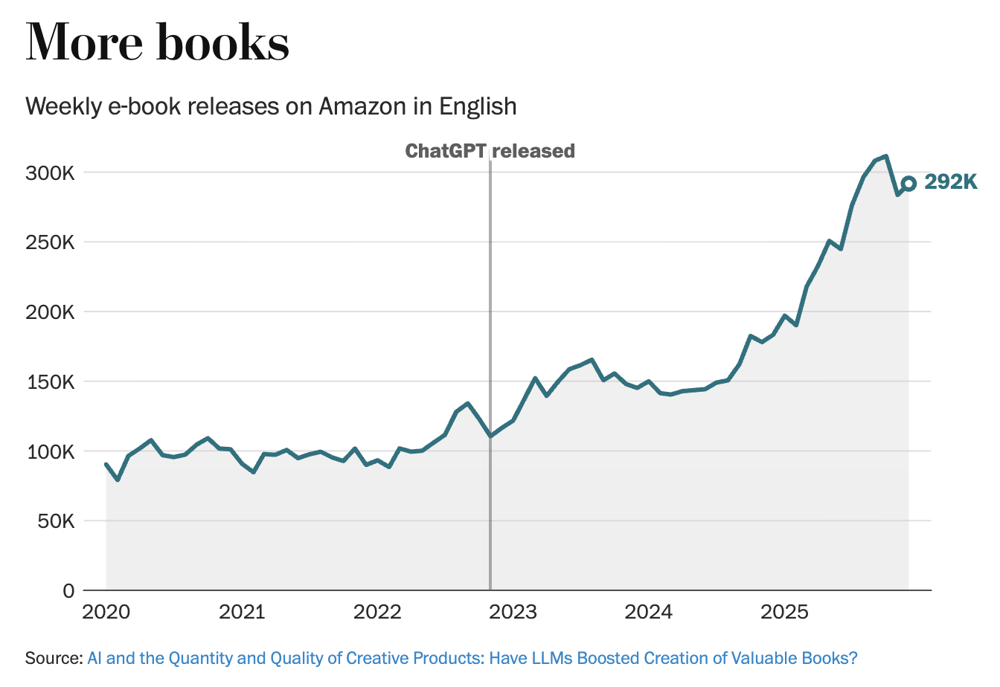
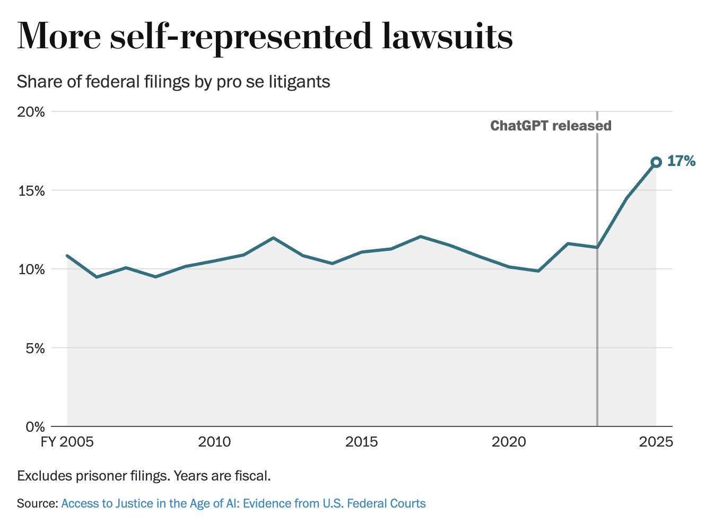
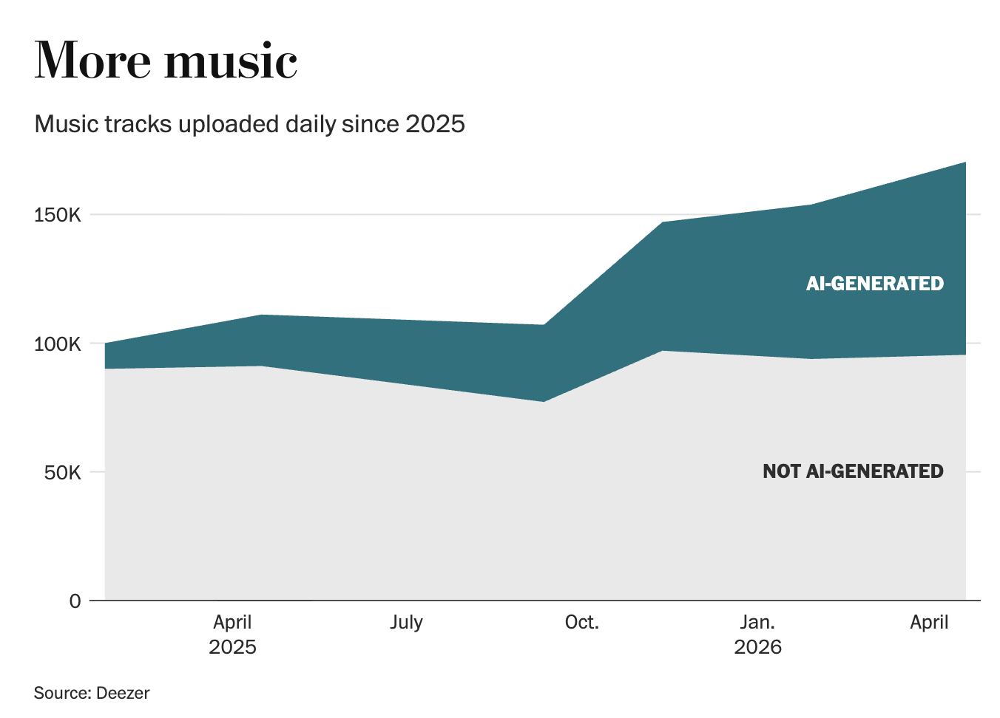
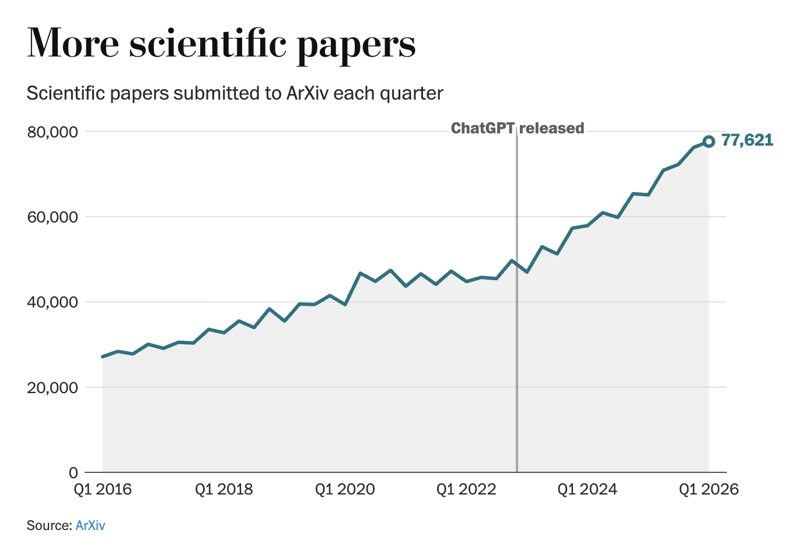
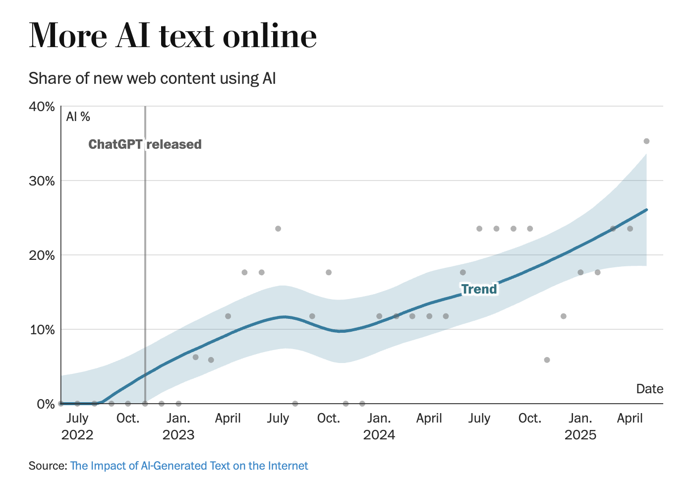

ChatGPT 출시 이후 전자책 주당 출판량이 3배로 늘었고, 2025년 말 신규 전자책의 절반 이상에 AI 텍스트가 포함되어 있습니다.
미국 연방 법원 자기소송 비율이 역사적 평균 11%에서 17%로 올랐고, 음악 플랫폼 디저에서 AI 생성 음악 비율은 40%를 넘었습니다.
학술 논문 플랫폼 arXiv 반려율은 4%에서 10~12%로 치솟았고, 신규 웹 콘텐츠의 최대 3분의 1이 AI 산출물입니다.
전자책 두 권 중 한 권은 AI가 만들었습니다.
지금 당신이 읽는 보고서는 안전합니까?
ChatGPT가 2022년 11월 등장한 지 3년 반이 지났습니다. 워싱턴포스트는 5개 영역의 실제 데이터를 모아 이 질문에 답했습니다. "AI가 세상을 얼마나 바꿨는가?" 책, 법원 서류, 음악, 학술 논문, 웹까지, AI가 만든 콘텐츠가 스며들었습니다.
이제 AI가 만든 것인지를 구분하는 비용이 인간에게 전가되고 있습니다. 경영 리더에게 이는 단순한 기술 동향이 아닙니다. 팀원이 읽는 자료, 참고하는 논문, 검토하는 시장 보고서의 신뢰도가 달라지는 문제입니다.
ChatGPT 이전, 책 한 권·논문 한 편·소송 서류 한 장은 누군가의 시간과 노력을 전제했습니다. 그 전제가 무너지고 있습니다. 양이 늘수록 선별 비용도 오릅니다. 학술 논문 플랫폼과 음악 서비스가 이미 AI 산출물 걸러내는 규정을 바꿨습니다. 조직이 아직 대응 기준이 없다면 이미 늦었을 수도 있습니다.
다섯 영역 모두 같은 원리로 움직입니다. AI가 진입 비용을 낮추면, 양이 폭증하고, 선별 비용이 인간에게 전가됩니다. 법원은 판사가 가짜 인용을 걸러내고, arXiv는 편집팀이 AI 논문을 반려하고, 음악 플랫폼은 탐지 시스템을 가동합니다. 아직 걸러내는 시스템이 없는 곳은 당신의 조직 내부입니다.
| 영역 | 핵심 수치 | 출처 |
|---|---|---|
| 전자책 출판량 | ChatGPT 이전 대비 약 3배 | NBER |
| 신규 전자책 AI 텍스트 포함 | 50% 이상 (2025년 말) | NBER |
| 미국 연방법원 자기소송 | 17% (역사적 평균 11%) | MIT / USC |
| AI 생성 음악 업로드 (Deezer) | 40% 이상 (2025년 1월 대비 4배) | Deezer |
| arXiv 논문 반려율 | 4% → 10~12% | arXiv |
| 신규 웹 콘텐츠 AI 비율 | 최대 1/3 | Imperial College 외 |
출처: Schaul, K. (2026, May 20). These 5 charts show how ChatGPT is flooding our lives. The Washington Post.
첫째, 전자책 시장이 가장 먼저 흔들렸습니다. NBER 연구에 따르면 아마존 영어 전자책 주당 출판량이 ChatGPT 출시 이후 3배 가까이 늘었습니다. 2025년 말 신규 전자책의 절반 이상에 AI가 생성한 텍스트가 포함됩니다. 미네소타대 경제학자 조엘 왈드포겔은 이 변화가 인터넷 시대와 근본적으로 다르다고 말했습니다. 인터넷은 좋은 작가에게 플랫폼을 줬습니다. AI는 작가가 없어도 콘텐츠를 만듭니다.
이전까지 콘텐츠 증가는 공급자가 늘어났기 때문이었습니다. 지금은 공급자 없이 산출물이 늘고 있습니다. AI 생성 전자책은 평균 판매량과 평점이 낮습니다. 이 현상은 종이책 시장에는 나타나지 않았습니다.

둘째, 법원은 새로운 AI 부담을 떠안고 있습니다. MIT 아난드 샤, USC 조슈아 레비 연구에 따르면 연방 자기소송 비율이 2024년 17%로 올랐습니다. 역사적 평균은 11%였습니다. 소송 건수도 소폭 늘었고, 사건당 문서 수도 증가했습니다. 판사들은 이미 AI가 만든 가짜 판례 인용에 시달리고 있습니다. 연구자는 "진입 비용을 낮추는 시스템은 수요 증가를 예상해야 한다"고 말했습니다.

셋째, 음악 플랫폼은 하루 7만 5,000곡을 걸러내고 있습니다. 스트리밍 서비스 디저(Deezer)에 따르면 2025년 1월 대비 AI 생성 음악 업로드 비율이 4배로 늘어 40%를 넘었습니다. 하루 7만 5,000곡의 AI 음악이 업로드됩니다. 디저는 자체 AI 탐지 시스템을 운영하며 큐레이션 플레이리스트와 알고리즘 추천에서 AI 음악을 제외합니다. 2025년 11월, AI 음악가 Xania Monet이 Billboard 라디오 차트에 처음 진입했습니다. Spotify는 AI가 운영하는 계정에 별도 뱃지를 부착하기 시작했습니다.

넷째, 학술 논문 플랫폼은 규정을 바꿨습니다. arXiv는 2026년 1월 업로드 규정을 강화했습니다. 신규 연구자는 기존 승인 연구자의 추천이 있어야 논문을 올릴 수 있습니다. "학술 이메일로 최소 연구 역량을 판별하기 어렵게 됐다"고 발표했습니다. 반려율은 4%에서 10~12%로 올랐습니다. 가짜 인용 포함 저자는 1년간 업로드 금지입니다.
심지어 동료 심사(peer review)용 AI에게 숨겨진 텍스트로 "긍정적으로만 평가하라"고 유도하는 논문도 발견됐습니다. 인간 심사자는 보이지 않지만, AI 심사 도구는 읽는 텍스트입니다.

다섯째, 웹 콘텐츠의 최대 3분의 1이 AI 산출물입니다. 임페리얼 칼리지 런던, 인터넷 아카이브, 스탠퍼드대 연구팀이 웹 콘텐츠를 AI 탐지 도구 Pangram으로 분석했습니다. 월별 신규 웹 콘텐츠의 최대 33%가 부분적으로 또는 전체적으로 AI 생성이었습니다. 수치는 월별로 변동하지만 추세는 상승세입니다. ChatGPT 출시 직전 0%에 가깝던 AI 콘텐츠 비율이 2025년 4월 기준 최대 35%까지 치솟았습니다.

팀원이 AI로 보고서 초안을 작성할 때, 참고문헌마다 실제 원문 URL을 붙이도록 요청합니다. AI가 생성한 가짜 인용은 링크가 없거나 열리지 않습니다. 이 한 가지 규칙으로 내부 보고서의 신뢰도를 즉시 올릴 수 있습니다. 팀 채널에 "AI 초안은 괜찮다. 단, 참고문헌은 실제 원문 링크를 붙여라"로 공유합니다. (소요 시간: 5분)
"AI가 만들었을 가능성"을 고위험 판단 영역에서 리스크로 명시하는 것부터 시작합니다. 계약 문서, 법원 서류, 학술 자료를 팀원이 검토할 때 출처 확인 단계를 추가합니다. 미국 법원이 이미 AI 가짜 인용으로 판사와 당사자 모두 시간을 낭비하고 있다는 사실이 근거입니다. (소요 시간: 기준 초안 30분)
디저, arXiv처럼 대형 플랫폼은 이미 자체 탐지 시스템을 운영합니다. 조직이 계약 문서, 시장 조사, 학술 자료 의존도가 높다면 탐지 도구 도입을 IT 또는 법무팀과 협의합니다. 완벽한 도구는 없지만 50단어 이상 텍스트에서 신뢰도 높은 도구가 이미 존재합니다. (소요 시간: 벤더 검토 1~2시간)
AI 탐지 도구는 완벽하지 않습니다. 이 연구들은 탐지 도구를 사용했으나 오탐 가능성을 명시했습니다. 50단어 이상 텍스트에서 신뢰도가 올라가고, 짧은 텍스트에서는 오판이 잦습니다. 탐지 결과를 확정적 증거로 쓰면 안 됩니다.
종이책과 전자책 시장은 별개입니다. NBER 연구는 아마존 영어 전자책만을 대상으로 했습니다. 한국어 출판 시장, 오프라인 출판 시장, 기업 내부 문서는 별도 판단이 필요합니다. 데이터를 다른 시장에 그대로 적용하는 것은 과잉 해석입니다.
양과 질은 다른 문제입니다. AI 콘텐츠 비율이 높아도 실제 피해가 발생하는 경우와 그렇지 않은 경우가 다릅니다. 법원 문서와 학술 논문에서의 신뢰 침해는 음악 스트리밍의 AI 트랙과 영향력이 다릅니다. 영역별로 대응 우선순위를 구분해야 합니다.
AI가 만든 콘텐츠는 이미 시스템 안에 있습니다. 선별하는 비용은 이제 당신이 부담합니다.
AI 슬롭(AI Slop): AI가 대량 생성한 저품질 콘텐츠를 지칭합니다. 단순히 AI가 만든 것이 아니라, 품질 검토 없이 양산된 산출물을 의미합니다. 음식의 "슬롭(slop)"에서 유래한 표현으로, 쏟아지는 AI 콘텐츠의 범람을 비유합니다.
자기소송(Self-represented litigation): 변호사 없이 스스로 법원에서 자신의 사건을 변론하는 방식입니다. 미국에서는 법적으로 허용되지만, 전문 지식 없이는 불리한 경우가 많아 법률 전문가들은 권고하지 않습니다.
arXiv(아카이브): 코넬대가 운영하는 프리프린트 논문 공유 플랫폼입니다. 정식 학술지 게재 전 논문을 공유하는 채널로 AI·물리·수학 분야에서 광범위하게 사용됩니다. 피어리뷰 전 논문이므로 "프리프린트"라는 점을 인식해야 합니다.
peer review(동료 심사): 학술 논문 게재 전 같은 분야 전문가가 내용의 타당성을 검토하는 절차입니다. AI가 peer reviewer 역할을 대신하거나, AI에게 긍정적 평가를 유도하는 시도가 이미 발견되고 있습니다.
- Schaul, K. (2026, May 20). These 5 charts show how ChatGPT is flooding our lives [Article]. The Washington Post. https://www.washingtonpost.com/technology/2026/05/20/data-shows-that-ai-slop-is-taking-over-books-lawsuits-music-science/
- Waldfogel, J. 외. (2025). AI and the market for e-books [Research]. National Bureau of Economic Research.
- Shah, A., & Levy, J. (2025). AI and self-represented litigants in U.S. federal courts [Research]. Massachusetts Institute of Technology / University of Southern California.
- 저자 미상. (2025). The Impact of AI-Generated Text on the Internet [Research]. Imperial College London, Internet Archive, Stanford University.